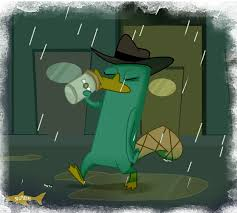

Group Bios
Andrew Partridge
Andrew Partridge. Male. 25 years old, moved around alot as a kid, like to write and create worlds and backstories, i love this aspect of gaming. Love video games, board games and tabletop games.
Christine Todd

Christine Todd. Female. 24 years old, loves to sing, create art, do photography, hike, watch netflix, play video games and board games casually. Was a assistant teacher for 6 years. I hope to get the skills it takes to make a website from this course. I hope to get into a creative field after GIMM to where I can use my skills to help other people.
Jonathan Gaige

Joe Gaige. Male. 29 years old. I’m currently attending Boise State University for a bachelor's degree in Games and Interactive Mobile Media. I’m hoping to become a back end app developer with this degree. I have extensive knowledge in a range of Adobe programs, Unity based programs, and in Maya. I’m learning and continuing to develop my skills in coding for game building, animation, website creation and much more. My personal hobbies are gaming, fishing, rock hunting, camping, hiking, tennis, and playing around with my applications I have created and that I’m currently working on.
Devon Smallwood

Male. 21 years old. I moved here from Washington state last year to start learning about the things I am passionate about. GIMM has given me the opportunity to explore every facet of game design at once—programming, art and animation, sound design, and so on. Since starting this program, I have become well-versed in Microsoft Office and the Adobe CC Suite. I am in the process of learning to program in C#, HTML, and other languages. In my spare time I enjoy singing, writing, gaming, and hiking.